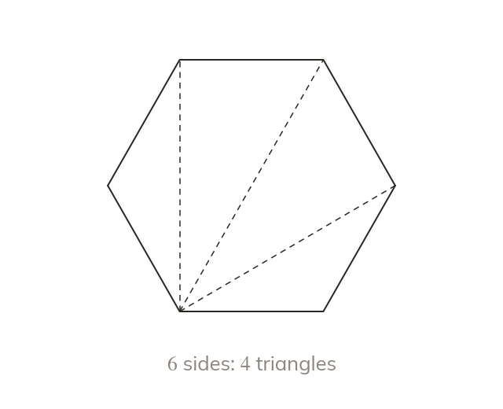
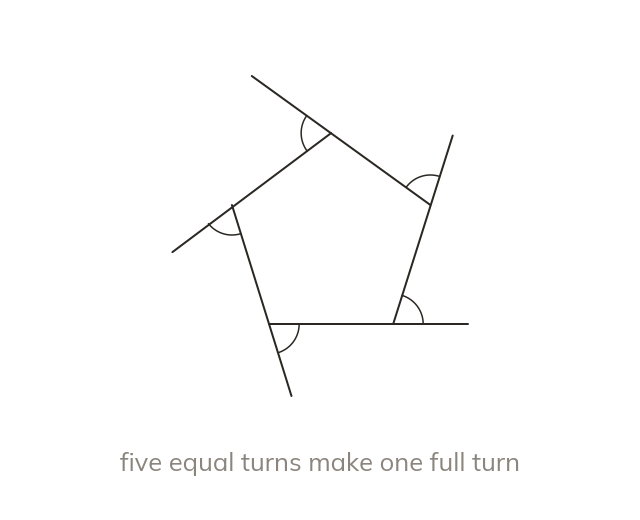
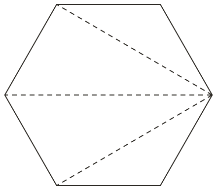
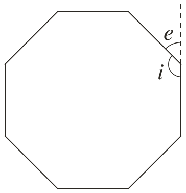
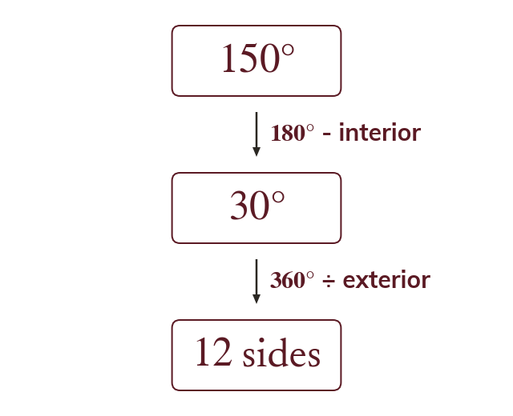
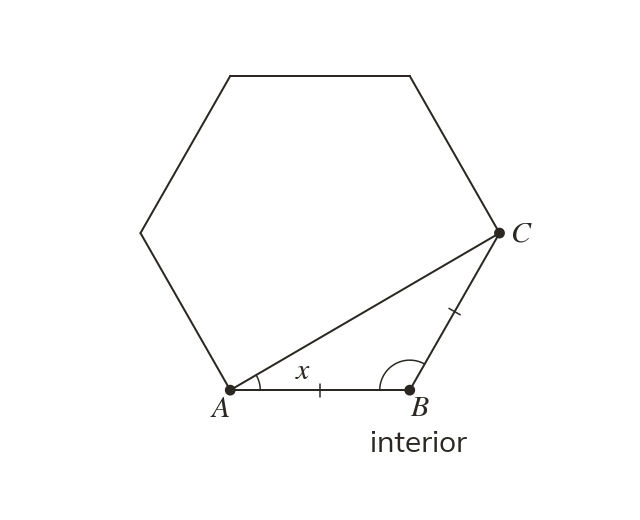
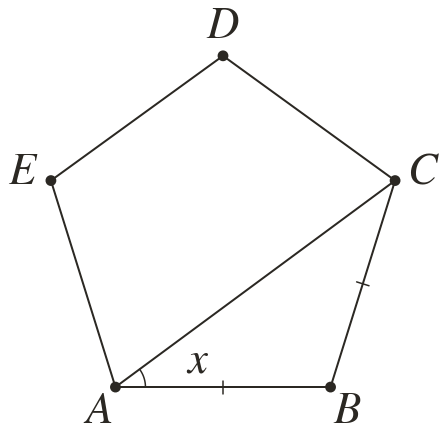
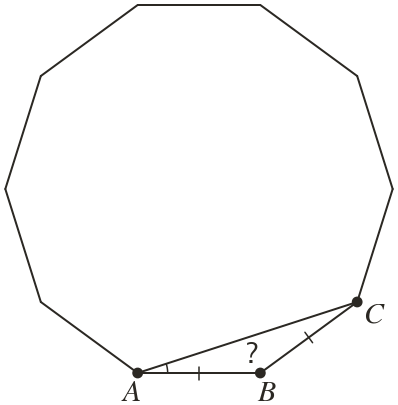
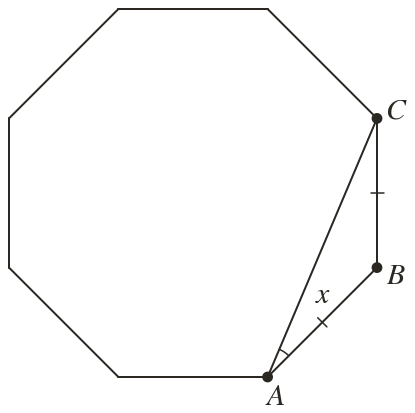

Triangles inside a polygon
Diagonals from one corner split a polygon with sides into triangles. So its interior angles add to degrees.
Honeycombs, floor tiles and road signs are polygons. One fact about triangles gives the angle total of every one of them.
Work down the page at your own pace. Write every answer in your book first, then click to check it.
Read each card, then follow the worked examples one step at a time.

Diagonals from one corner split a polygon with sides into triangles. So its interior angles add to degrees.

Walking once round any polygon turns through so its exterior angles add to In a regular polygon they are equal, so each one is


Pick an answer. If it's wrong, the feedback tells you which mistake it was.
Read each card, then follow the worked examples one step at a time.

The exterior angles of a regular polygon share equally. So the number of sides is ÷ the exterior angle.

A polygon's angle facts work alongside triangle and parallel-line facts in one diagram. Each step uses one fact and names it.


Pick an answer. If it's wrong, the feedback tells you which mistake it was.

Finished? Next lesson: 10.8.1 Solving Simple Equations.
Log in, then search for a code to practise that skill.